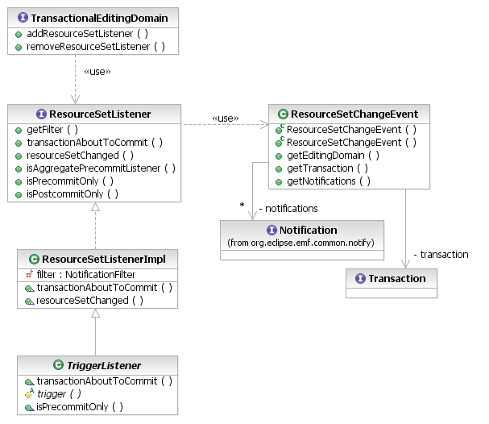

When they attempt to commit, Transactions use the EMF Validation Framework to validate the changes that have occurred during the time that they were active. If this validation finds problems with IStatus.ERROR severity or worse, then the transaction rolls back instead of committing, and the commit throws a RollbackException to the client.
However, client applications do not like it when their transactions are rolled back in this way. The assurance of data integrity is good, but a user's workflow generally is diverted. Given that these integrity constraints are essential to the health of the user's data, then, an application needs a way to be proactive in ensuring that they will be met. This mechanism is the pre-commit listener, better known as a trigger for its analogy to triggers in relational database management systems.

[as SVG]
When a client commits a read/write transaction, the transaction first notifies pre-commit listeners that it is about to commit, invoking the transactionAboutToCommit(ResourceSetChangeEvent) call-back. The listeners respond by returning trigger Commands, if necessary, that the transaction executes to perform additional changes to bring the resource set contents back into a consistent state.
Triggers only return commands to be executed by the transaction. They cannot directly change the model because, like the post-commit listeners, they are called in a read-only transaction (nested within the read/write transaction that is committing). When the transaction has received all of the trigger commands from its listeners, it executes these commands in a nested read/write transaction. The pre-commit procedure is recursive; this transaction that executes the trigger commands will, itself, invoke pre-commit listeners to ensure integrity of the changes that the triggers effect. Also, all of the changes performed by triggers are validated in the final stage of the original transaction's commit.
If, for some reason, a trigger cannot provide the commands that it needs to ensure data integrity, then it may throw a RollbackException to force the transaction to roll back. For example, the trigger may be intended to keep the EMF resource set synchronized with some other data store. If that data store should become inaccessible, then the trigger cannot perform its function.
For details of the ResourceSetChangeEvent and the NotificationFilter API and statically registering listeners on editing domains, see the discussion of resource set listeners.
// trigger ensuring that all libraries have names
class MyListener extends ResourceSetListenerImpl {
MyListener() { // only interested in changes to Library objects
super(NotificationFilter.createNotifierTypeFilter(
EXTLibraryPackage.Literals.LIBRARY));
}
public Command transactionAboutToCommit(ResourceSetChangeEvent event)
throws RollbackException {
List commands = new ArrayList();
Iterator iter = event.getNotifications().iterator();
while (iter.hasNext()) {
Notification next = (Notification) iter.next();
Library library = (Library) next.getNotifier();
if (library.getName() == null)
commands.add(SetCommand.create(
event.getEditingDomain(), library,
EXTLibraryPackage.Literals.LIBRARY__NAME, "A library"));
}
return commands.isEmpty()? null : new CompoundCommand(commands);
}
}
As for post-commit listeners, the EMF Transaction API provides a convenient abstract class that dispatches Notifications one by one to a trigger: the TriggerListener. A subclass needs only to implement the trigger() method to return a command in response to a notification. The TriggerListener class takes care of combining the results the results into an appropriate compound command.
class MyTriggerListener extends TriggerListener {
MyListener() { // only interested in changes to Library objects
super(NotificationFilter.createNotifierTypeFilter(
EXTLibraryPackage.Literals.LIBRARY));
}
protected Command trigger(TransactionalEditingDomain domain,
Notification notification) throws RollbackException {
Library library = (Library) next.getNotifier();
if (library.getName() == null) {
return SetCommand.create(domain, library,
EXTLibraryPackage.Literals.LIBRARY__NAME, "A library");
}
return null;
}
}
Copyright (c) 2006, 2007 IBM Corporation and others. All Rights Reserved.